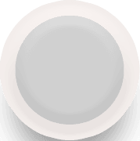

<!-- <ion-header>
  <ion-toolbar>
    <ion-buttons slot="start">
      <ion-menu-button></ion-menu-button>
    </ion-buttons>
    <ion-title>
      Home
    </ion-title>
  </ion-toolbar>
</ion-header> -->

<ion-content padding no-bounce has-bouncing="false" forceOverscroll="false" class="center-aligns full-background-color">
    <div class="Aligner">
       <app-range-slider></app-range-slider>
    </div>
    <div id="finger-print" class="Aligner">
      
      
    </div>
    <ion-input type="hidden" id="range" name="range" [(ngModel)]="range"></ion-input>
    <ion-button shape="round" class="float-right button-color" (click)="screen2()"><b>Done</b></ion-button>
</ion-content>


